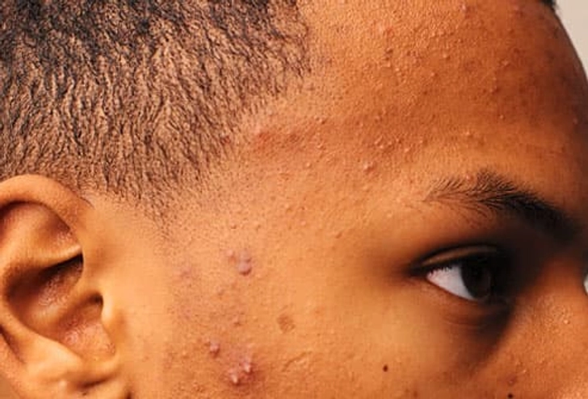
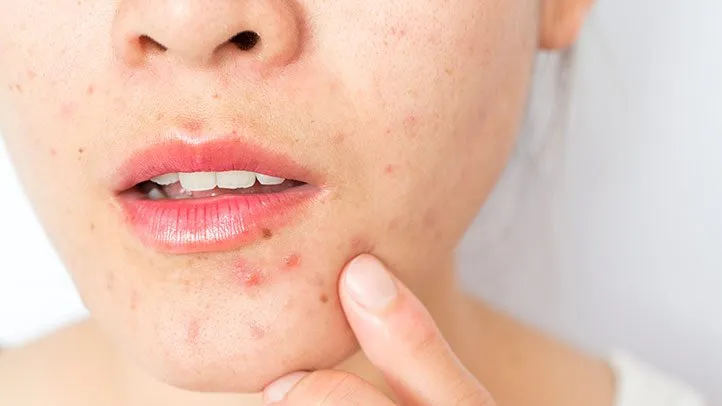
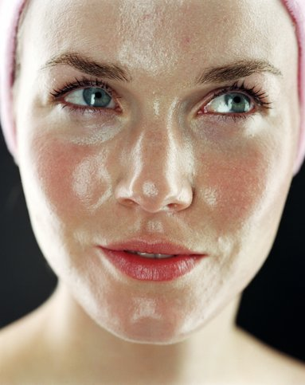
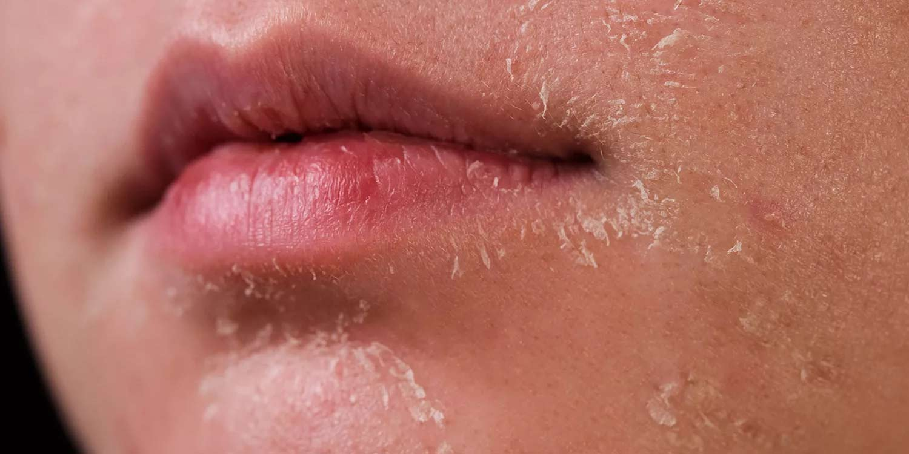

Where skin health matters!
Some few common problems associated with the skin!
Your skin can go thorugh different challenges depending on your lifestyle, environment and skincare routine you are following. Understanding these common skin problems is the first step to treating and preventing them.
Acne is a one of the most common skin condition, especially among teenagers and young adults. It occurs when hair follicles become clogged with oil(sebum) and dead skin cells.
It can cause:
Here are a few pictures showing an acne prone skin

Figure 1: Acne skin

Figure 2: Acne skin
Oily skin happens when the sebaceous glands produce too much oil (sebum). This can make the skin look shiny and greasy and in creasing the chances of clogged pores and acne.
Common signs include:
Here is also a picture demonstrating an oily skin

Figure 3: Oily skin
Dry skin occurs when the skin lacks enough moisture. It may feel rough, tight, or flaky and can sometimes become irritated. It can also cause problems like Eczema which is a skin condition caused by extreme dryness of the skin
Common causes include:
Below is a picture demonstration of a dry skin

Figure 4: Dry skin
Not sure which routine suits your skin?
Take our Skin Type Quiz to get personalized skincare recommendations!